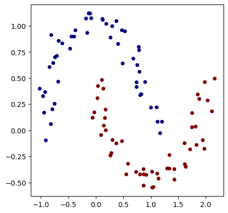

np.random.seed(1337)
random.seed(1337)micrograd-nbdev
microgram with nbdev
This file will become your README and also the index of your documentation.
Install
pip install micrograd_nbdevHow to use
Fill me in please! Don’t forget code examples:
# make up a dataset
from sklearn.datasets import make_moons, make_blobs
X, y = make_moons(n_samples=100, noise=0.1)
# make y -1 or 1
y = y*2-1
# visualize in 2D
plt.figure(figsize=(5,5))
plt.scatter(X[:,0], X[:,1], c=y, s=20, cmap='jet')<matplotlib.collections.PathCollection>
# initialize a model with 2 features
model = MLP(2,[16, 16, 1])
print("number of parameters", len(model.parameters()))number of parameters 337# loss function
def loss(batch_size=None):
# inline DataLoader :)
if batch_size is None:
Xb, yb = X, y
else:
ri = np.random.permutation(X.shape[0])[:batch_size]
Xb, yb = X[ri], y[ri]
inputs = [list(map(Value, xrow)) for xrow in Xb]
# forward the model to get scores
scores = list(map(model, inputs))
# svm "max-margin" loss
losses = [(1 + -yi*scorei).relu() for yi, scorei in zip(yb, scores)]
data_loss = sum(losses) * (1.0 / len(losses))
# L2 regularization
alpha = 1e-4
reg_loss = alpha * sum((p*p for p in model.parameters()))
total_loss = data_loss + reg_loss
# also get accuracy
accuracy = [(yi > 0) == (scorei.data > 0) for yi, scorei in zip(yb, scores)]
return total_loss, sum(accuracy) / len(accuracy)
total_loss, acc = loss()
print(total_loss, acc)Value(data=0.8958441028683222, grad=0) 0.5# optimization
for k in range(100):
# forward
total_loss, acc = loss()
# backward
model.zero_grad()
total_loss.backward()
# update (sgd)
learning_rate = 1.0 - 0.9*k/100
for p in model.parameters():
p.data -= learning_rate*p.grad
if k%10 == 0:
print(f"step: {k} | total_loss: {total_loss.data} | acc {acc*100}%")step: 0 | total_loss: 0.8958441028683222 | acc 50.0%
step: 10 | total_loss: 0.24507023853658036 | acc 91.0%
step: 20 | total_loss: 0.18977522856087645 | acc 91.0%
step: 30 | total_loss: 0.11731297569011845 | acc 95.0%
step: 40 | total_loss: 0.0601600989523447 | acc 100.0%
step: 50 | total_loss: 0.09875114765619608 | acc 96.0%
step: 60 | total_loss: 0.032597111578102286 | acc 99.0%
step: 70 | total_loss: 0.014229870065926908 | acc 100.0%
step: 80 | total_loss: 0.012318500800515816 | acc 100.0%
step: 90 | total_loss: 0.010984458327280174 | acc 100.0%